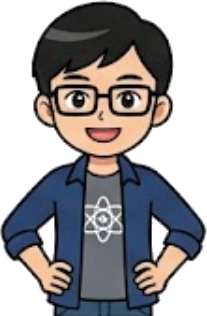
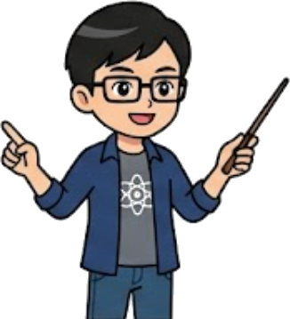
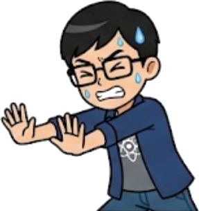

基礎力學：壓力與液體壓力
壓力的定義
壓力不是力！它描述的是「力量集中的程度」。
- 定義： 單位面積上所受到的垂直作用力。
🚨 圖釘觀念破解：
相同的力道下，接觸面積越小，壓力越大（容易刺穿氣球）。面積越大，壓力越分散。
【互動】氣球圖釘挑戰

磚塊翻轉練習
❓ 問題：
一塊長 20 cm、寬 10 cm、高 5 cm 的均勻磚塊，總重量為 1200 gw。
請問它平放與立放時，能產生的「最大壓力」與「最小壓力」各為多少 gw/cm²？
💡 提示：
1. 重量 F = 1200gw 永遠不變。
2. 最大壓力 ➡️ 找面積最小的那一面著地（立放）。
3. 最小壓力 ➡️ 找面積最大的那一面著地（平放）。
✅ 解答：
最小面積 = 10 × 5 = 50 cm²
最大壓力 = 1200 / 50 = 24 gw/cm²
最大面積 = 20 × 10 = 200 cm²
最小壓力 = 1200 / 200 = 6 gw/cm²

按下按鈕，看同一塊 B-01 磚抬起、翻面，再壓上軟墊。
液體壓力的奧秘
- 公式： P = h × D
- 垂直深度 (h)： 從「自由液面」垂直往下算的距離。越深水壓越大。
- 本實驗只用清水： 固定液體種類，只改變水面高度，才能公平比較每個洞的深度。
💡 觀念破解：
同一桶清水中，洞到自由液面的垂直深度越大，水流剛離開洞口時的速度越快，接著在重力作用下形成拋物線。若容器密閉加蓋，水只會先流出少量；上方氣壓降低後，水流就會停止。
先預測：密閉加蓋後，水會一直流、完全不流，還是只流少量就停止？按下按鈕驗證。
直接拖曳動畫中的水面，觀察哪些洞開始或停止出水。
不同形狀的杯子
❓ 問題：
桌上有三個形狀不同、裝水量也不同的杯子（甲、乙、丙）。
若三個杯子裝滿清水，且「水面高度」完全一致，請問杯底 A、B、C 三點的水壓大小關係為何？
💡 提示：
1. 液體壓力公式為 P = h × D。
2. 杯子裝的都是清水，密度 D 相同。
3. 觀察這三點距離「水面」的垂直深度 h 是否相同？
✅ 解答：
因為三點距離水面的垂直深度 h 皆相同！
結論：P甲 = P乙 = P丙
液體壓力與容器形狀、水量多寡皆無關！
3D 深海壓力觀測艙
旋轉整桶水、直接抓住柔軟空氣球下潛到 40 m。觀察水從四面八方向內施壓，以及球內空氣如何被壓縮。
拖曳空氣球改變深度；拖曳水槽空白處旋轉視角。觀察壓力與球體積如何同步改變。
科學提醒：畫面中的 P 是水造成的表壓，1 m 清水約為 100 gw/cm²。計算空氣球壓縮時，使用總壓力 P總 = 1033 + P（大氣壓約 1033 gw/cm²）。
先隨意拖動柔軟空氣球。注意：壓力箭頭由四周朝內，球也會隨深度縮小。
| 容器 | 深度 h | 壓力 P | 球體積 |
|---|---|---|---|
| 尚未記錄 | |||
連通管原理
當底部互相連通的容器裝入同一種液體，在靜止狀態下，各容器的「液面必定會維持在同一水平高度」。
- 原因： 為了讓底部相通處的液體壓力達到平衡。
- 生活應用： 熱水瓶的水位視窗、自來水廠的水塔供水系統、茶壺。
💡 動態平衡：
無論容器形狀多麼奇特、管徑多麼粗細，只要底部連通，大自然的水壓就會自動把它們推平！

帕斯卡原理 (以小搏大)
對「密閉容器」內的流體施加壓力時，該壓力會大小不變地傳遞到流體的每一個角落。
🔧 液壓千斤頂應用：
把右邊活塞的面積做成左邊的 10 倍。你在左邊壓 10kgw，右邊就能產生 100kgw 的向上推力，這就是機具煞車與千斤頂的魔法！
